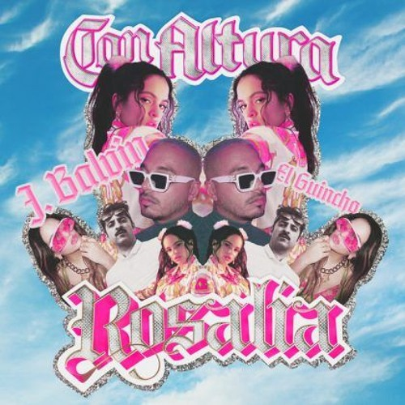

El primer proyecto discográfico como solista de Rosalía, titulado El mal querer, anunciado en Times Square, se lanzó el 2 de noviembre de 2018. Presentado como un álbum experimental y conceptual que gira en torno a una relación violenta. Se inspiró en una novela occitana, de autor anónimo, del siglo XIII titulada Flamenca. Surgió como su «tesis», su «proyecto de final de carrera» para completar el Título Superior de Flamenco en la Escuela Superior de Música de Cataluña. Ella misma refirió que «pensaba en desarrollar sobre todo un concepto de directo partiendo de un marco flamenco, pero que no tuviera nada que ver con un espectáculo tradicional de flamenco».
En noviembre de 2020 participa en el álbum de Bad Bunny El último tour del mundo en el tema «La noche de anoche». El 28 de marzo publicó el sencillo independiente «Con altura», junto a J Balvin y en colaboración con El Guincho (coproductor de El mal querer). La canción, además de ser considerada como un referente internacional de la música hispana en la sección Diary of a Song del diario estadounidense The New York Times, ganó en las categorías de mejor vídeo latino y mejor coreografía en la ceremonia de 2019 de los MTV Video Music Awards.
Rosalía actuó ante un centenar de personas en el Tablao del Carmen, un local especializado en flamenco en el Pueblo Español de Barcelona. Entre el público estaba Raül Refree, a quien invitó al espectáculo. Comenzaron a trabajar juntos en dos álbumes. Rosalía firmó con Universal Music más tarde en 2016 y se mudó a California. Continuó y solo lanzó Los Ángeles. El álbum habla de la muerte de una manera oscura con acordes de guitarra agresivos de Refree. Presenta reelaboraciones de clásicos del flamenco recibiendo varios elogios. Fue nominada a mejor artista nuevo en la 18.ª entrega de los Premios Grammy Latinos. El álbum fue lanzado el 10 de febrero de 2017 a través de Universal Music y generó dos sencillos, «Catalina», lanzado en octubre de 2016, y «De plata», lanzado en agosto de 2017. El álbum fue muy bien recibido por la crítica. Jordi Bardají escribió el 1 de noviembre de 2018 que el disco era «uno de los mayores 'durmientes' que han conocido las listas de ventas españolas en los últimos tiempos».